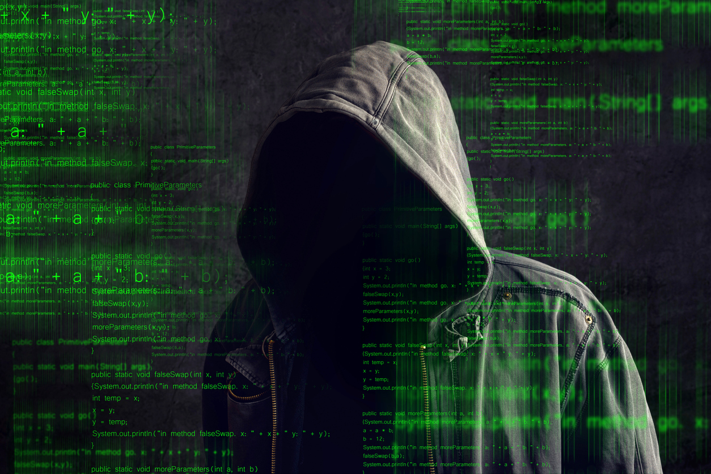
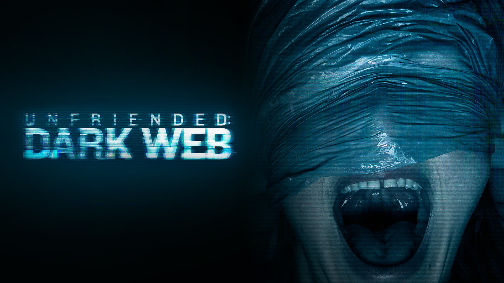

در دنیای اینترنت، علاوه بر بخشهایی که همه ما روزانه از آنها استفاده میکنیم و به نام وب سطحی (Surface Web) شناخته میشود، بخشهای دیگری نیز وجود دارد که دسترسی به آنها برای عموم مردم ممکن نیست و به دارک وب (Dark Web) معروف است. دارک وب یکی از جنبههای تاریک و ناشناخته اینترنت است که بسیاری از مردم در مورد آن شنیدهاند اما اطلاعات دقیقی ندارند.
دارک وب بخشی از دیپ وب (Deep Web) است که شامل تمام محتوایی میشود که توسط موتورهای جستجو ایندکس نشده و قابل جستجو نیست. برخلاف وب سطحی که از طریق مرورگرهای معمولی قابل دسترسی است، دارک وب نیاز به نرمافزارها و ابزارهای خاصی مانند تور (Tor) دارد تا بتوان به آن دسترسی پیدا کرد. تور یک شبکه ناشناس است که ترافیک اینترنت را از طریق مجموعهای از سرورها رمزگذاری و هدایت میکند تا هویت کاربران و موقعیت جغرافیایی آنها مخفی بماند.
بازارهای سیاه: در این بازارها میتوان هر نوع کالای غیرقانونی از جمله مواد مخدر، اسلحه، اطلاعات شخصی دزدیده شده، و حتی خدمات هک و نفوذ به سیستمها را پیدا کرد.
انجمنها و چتهای خصوصی: بسیاری از انجمنها و گروهها برای بحث در مورد موضوعات حساس و خصوصی در دارک وب فعالیت میکنند. این انجمنها معمولاً از طریق تور قابل دسترسی هستند و اغلب به بحثهای مرتبط با امنیت سایبری، سیاستهای محرمانه و حقوق بشر میپردازند.
ارائهدهندگان خدمات خصوصی: برخی از سرویسها و خدمات مانند ایمیلهای امن و ناشناس، میزبانی وب ناشناس و خدمات VPN خصوصی نیز در دارک وب یافت میشوند.
اطلاعات محرمانه: دارک وب محیطی مناسب برای انتشار اطلاعات محرمانه و افشاگریهایی است که در وب سطحی امکان انتشار آنها وجود ندارد.
امنیت: بسیاری از سایتهای دارک وب توسط مجرمان سایبری کنترل میشوند که ممکن است از کاربران کلاهبرداری کنند یا آنها را هدف حملات سایبری قرار دهند.
قانونی: بسیاری از فعالیتهای دارک وب غیرقانونی هستند و دسترسی به این محتواها ممکن است باعث مشکلات قانونی شود.
محتوای نامناسب: در دارک وب محتوای نامناسب و خشونتآمیز فراوانی وجود دارد که ممکن است برای کاربران ناخوشایند یا آسیبزا باشد.